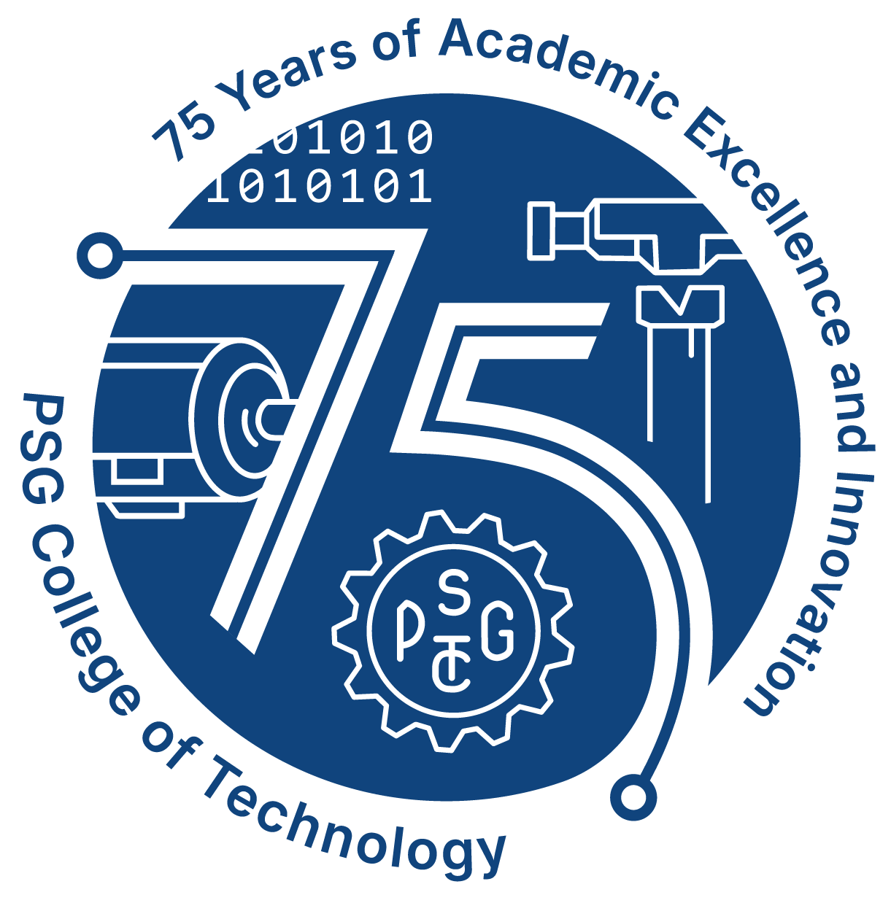
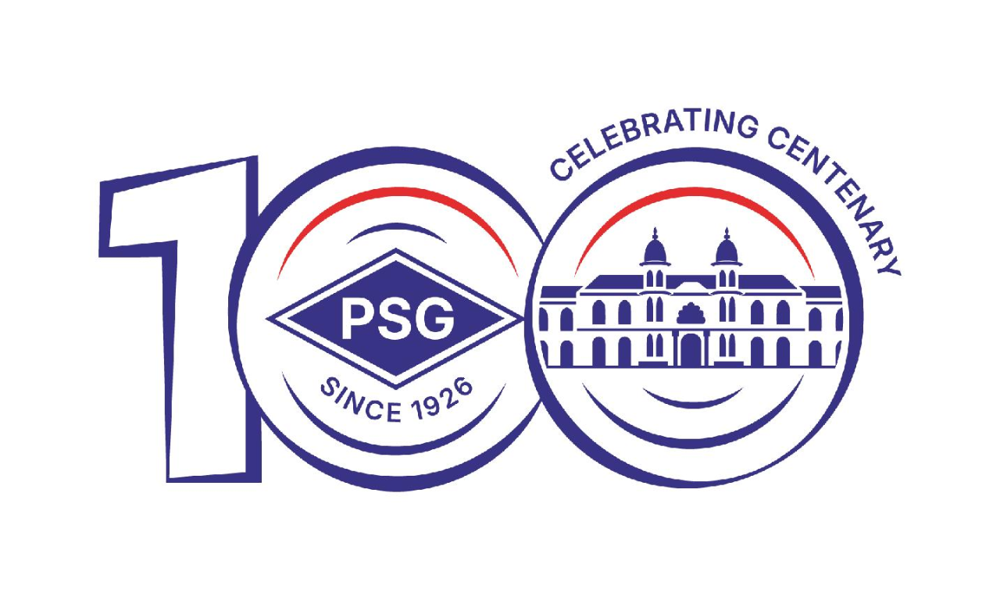

PSG College of Technology, is a premier educational institution situated in an industrial and textile city, Coimbatore, affiliated to Anna University. This College has achieved an autonomous status in 2004. We have signed MoUs with various industries and academic institutions.
The PSG College of Technology was established in the year 1951 and the Founders wisely decided to locate it in the same campus as the PSG Industrial Institute for effective industry–institute interaction. The College has completed more than 65 years of academic excellence and has been contributing extensively to technological education in India.
PSG College of Technology was founded by the management of PSG & Sons' Charities. The founders established the institution to advance education, research and industry collaboration in the region. The college continues to follow the vision of its founders and serves students from many parts of India.
The college today is known for strong industry partnerships, excellent academic programmes, modern laboratories and committed faculty. It provides opportunities for students to develop technical knowledge, leadership qualities and social responsibility through curricular and co-curricular activities.
The College was recognized by UGC in 1978. The College maintains a close association with industry and research organisations. Several programmes are accredited and the institution continually works to strengthen teaching, learning and research quality.
PSG College of Technology aspires to be recognized as one of the leaders in engineering education, research and application of knowledge to benefit society.